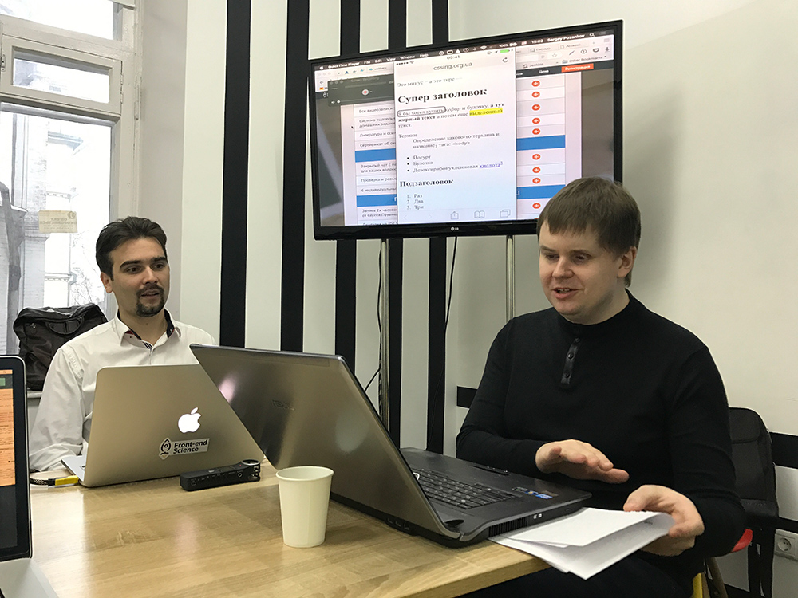
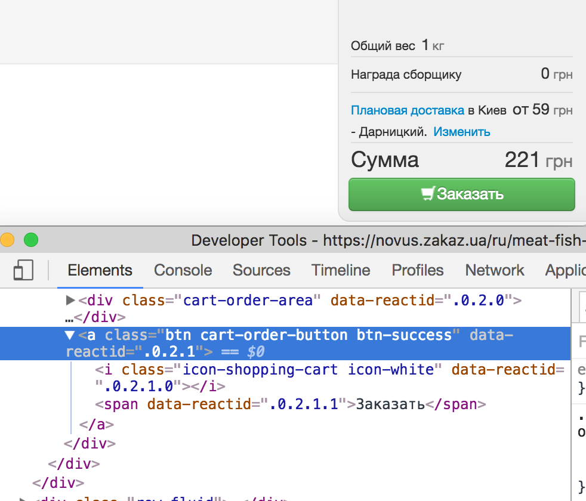
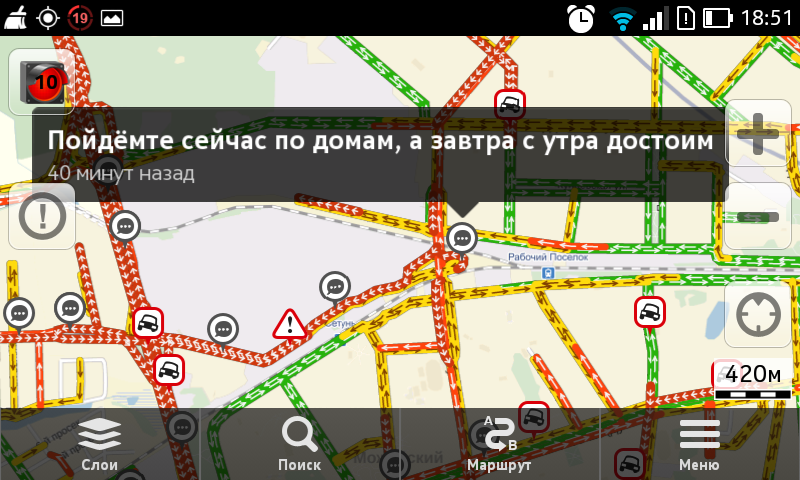

Слепая доступность
26 December, 2016Познакомился с парнем который не видит, но делает сайты.
Мастеркласс Blind Accessibility от Дмитрия Попова
Вчера побывал на мастер-классе незрячего разработчика Дмитрия Попова, он выступал на последнем киевском WSD, и ребята из Frontend-Science организовали отдельный развернутый воркшоп. И это было круто, немного информации, много ответов на вопросы, много реального опыта восприятия сайтов по-другому.
Что там было
Во-первых Дмитрий крутой перец.
Удивительное для лично меня
Совершенно и искренне перевернуло мой мир веб-разработчика когда Дмитрий Попов в Devtools браузера исправил HTML сайта, для того чтобы он стал более доступным для скринридера.
Подумайте об этом.
И еще немного.
Забавно, что Devtools браузера были свернуты так, что на экране их даже не было видно. Но все получилось. Потому что их и не надо было видеть. Ну да.
О том что Дмитрий абсолютно без проблем отредактировал html страничку в notepad, наверное
даже лишне говорить. Но его родной редактор в котором он пишет код: Nodepad++, как он сказал.
Тестируем разные сайты на доступность, под рукой у Дмитрия его “шпаргалки” набранные шрифтом Брайля
Во-вторых поделюсь самыми главными мыслями, которые, надеюсь, помогут вам делать более доступные сайты.
Основное
- Вы никогда не узнаете кто использует ваш сайт.
- Сделать сайт доступным, несложно, обычно они почти все доступны из коробки. Но досадные ошибки разработчиков в мелочах, или их легкомысленность могут легко сделать сервис недоступным для других людей.
- Чтобы сделать сайт доступным обычно не нужно ничего переделывать. Лишь добавить немного смысла в код.
- Атрибут lang значит много, и если неверно задан доставляет много неудобств. Лучше не задавать никакой, чем неверный.
И несколько более конкретных примеров.
Кнопки-активные элементы
90% проблем при доступности сайтов возникает из-за того что активные элементы сделаны не кнопкой и не ссылкой. Если кнопка сделана как <div> то читалка не воспринимает его как активный элемент, и не помещает
фокус на него при проходе страницы.
Чтобы решить эту проблему — просто используйте <button> или ссылку.
На худой конец используйте aria-label и role (role="button", например). Тогда читалка поставит фокус на этот элемент, и подскажет что он активный.
Например такая проблема есть на сайте Zakaz.ua
Кнопка сделана ссылкой без href, и читалка не воспринимает ее как управляющий элемент
Навигация по заголовкам
Оказывается очень удобно ходить по странице используя ее заголовки. На большинстве сайтов с этим все отлично, но на удивление на livejournal, заголовок статьи не является h1-h6 и тяжело найти начало текста. Вот например подобная тема в живом журнале
Отсылка к цветовой информации
Речь о всяких “Зеленые места свободны”, это, причем распространяется не только на тех кто не видит, но и на тех кто видит цвета по-другому, а таких людей очень немало. Стоит дублировать эту информацию альтернативным способом.
Например, Яндекс Карты, показывая пробки, дублируют информацию о пробке(это красная заливка) плотностью стрелочек на дороге. Я и не задумывался зачем это, пока Сергей Пузанков не рассказал.
Обратите внимание на длину стрелочек там где пробка и где её нет
Атрибут lang
Когда он задан неверно, читалка пытается читать русский текст с английской транскрипцией, и на скорости 400 слов в минуту это ужасно и вообще непонятно. Дмитрий рекомендовал задавать его даже для частей страницы, чтобы читалки экрана правильно произносили слова.
Не забывать об этом
Это конечно не полный список, но все это несложно, нужно просто не забывать о том что вашим сайтом будут пользоваться совершенно разные люди. И прекрасно, что и поисковая оптимизация, и семантика кода, и многое другое на самом деле косвенно помогает нам делать сайты более доступными для всех.
- Главная страница о доступности в веб-стандартах
- Нашел случайно статью о том как работают другие незрячие разработчики
- Пара фото с воркшопа
- Чеклист доступности сайта от разработчиков государственных сайтов в России